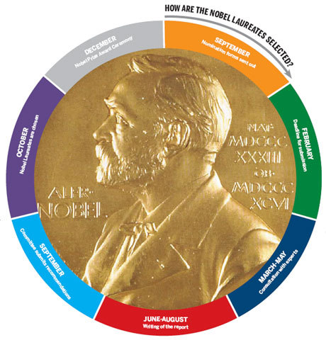

chapter24.1--handout
Background Information
Suez
💧苏伊士（Suez）埃及东北部的港口城市（a seaport city in north-eastern Egypt），位于苏伊士海湾（the Gulf of Suez）北侧。
💧提到苏伊士不能不提苏伊士运河（Suez Canal），1869年修筑通航的人工水道，在埃及贯通苏伊士地峡，沟通地中海与红海，提供从欧洲至印度洋和西太平洋附近土地的最近的航线。它是世界使用最频繁的航线之一。也是亚洲与非洲的交界线，是亚洲与非洲、欧洲人民来往的主要通道。
Bernhard von Bülow
💧伯恩哈德·冯·比洛（Bernhard von Bülow，1849年5月3日－1929年10月28日），德国政治家，曾任德意志帝国总理（Chancellor of the German Empire，一般我们说总理是premier，或者 Prime minister，但是德国和奥地利比较特别，是用chancellor这个词哈）。曾有名言揭示20世纪初德国的对外扩张政策：“让别的民族去分割大陆和海洋，而我们德国满足于蓝色的天空的时代已经过去了，我们也要求阳光下的地盘。”
💧Von Bülow未能抑制德国军事集团的形成被认为是导致第一次世界大战的部分原因。其外交政策，尤其是1905年公然挑战和法国的摩洛哥危机（ Moroccan crises）及1908年支持奥地利帝国（Austrian Empire）吞并波斯尼亚及黑塞哥维那（就是波黑，Bosnia and Herzegovina）的行为，令德国更加孤立。
Wilhelm II
💧威廉二世（德语：Wilhelm II von Deutschland）1859年1月27日－1941年6月3日，末代德意志皇帝和普鲁士国王以及霍亨索伦家族首领，也是世界大战，闪电战计划创始人。1941年威廉在荷兰多伦病逝，被葬于多伦庄园。
💧1859年1月27日， 威廉出生于柏林，是威廉一世的长孙，腓特烈三世和维多利亚公主的长子。由于出生时发生臀位生产，他患有厄尔布氏麻痹（Erb's Palsy），以至左臂萎缩。为弥补这一生理缺陷，威廉自幼接受严格的军事训练，尤其擅长于马术。1877年，他以皇长孙的身份进入著名学府波恩大学，专攻法律与国家学。1881年获学士学位。
PS：Kaiser这个词表示德国的皇帝哈（the title of the Holy Roman Emperors or the emperors of Austria or of Germany until 1918）
Roentgen rays
💧伦琴射线，也叫X射线，是由于原子中的电子在能量相差悬殊的两个能级之间的跃迁而产生的粒子流，是波长介于紫外线和γ射线之间的电磁波。由德国物理学家W.K.伦琴于1895年发现。
💧x射线具有很高的穿透本领，能透过许多对可见光不透明的物质，如墨纸、木料等。X射线最初用于医学成像诊断和X射线结晶学。X射线也是游离辐射等这一类对人体有危害的射线。
💧2017年10月27日，世界卫生组织国际癌症研究机构公布的致癌物清单初步整理参考，X射线和伽马射线辐射在一类致癌物清单中。
💧威廉·康拉德·伦琴——Wilhelm Conrad Röntgen（1845年3月27日－1923年2月10日），德国物理学家。
1895年11月8日，时为德国维尔茨堡大学校长的他在进行阴极射线的实验时，观察到放在射线管附近涂有氰亚铂酸钡的屏上发出的微光，最后他确信这是一种尚未为人所知的新射线。有人提议将他发现的新射线定名为“伦琴射线”，伦琴却坚持用“X射线”这一名称，产生X射线的机器叫做X射线机，另外第111号化学元素Rg（錀[lún] ）也以伦琴命名哒。1901年，首届诺贝尔奖颁发，伦琴获得诺贝尔物理学奖（Nobel prize in Physics），用他的X射线为开创医疗影像技术铺平了道路。

Vocabulary
susceptible
sensitized, sensitised, supersensitive
adj. 易受影响的; 易动感情的
be susceptible to
对…敏感；易患…；易受…影响
💧The problem is not susceptible of a simple solution.
这个问题不可能有一个简单的解决办法。
consternation
fear resulting from the awareness of danger
n. 惊愕；惊惶失措；恐怖
To her consternation, her car wouldn't start.
令她惊慌的是她的车没法发动。
panicky
thrown into a state of intense fear or desperation
adj. 恐慌的；由恐慌引起的
he gabbled on in a panicky way until he was dismissed.
他紧张慌乱地说个不停，直到被打发走才罢。
beam
beam在今天的内容中表示面露喜色，和原本的光束有些不同吼～
she beamed with pleasure.
她欣喜得满面笑容。
Crush Your Problems
- She was nineteen, had graduated from high school three years previously, and her business experience was a trifle more than zero.
💧 a trifle more than zero.
trifle在这里是少量的意思，所以这个短语就是比啥都没有稍微好一点的意思吧～
Don't be angry about a trifles more than zero!
不要为小事生气！
就是这么用的啦～
- After thinking the matter over, honestly and impartially, I concluded that Josephine's batting average at nineteen was better than mine had been - and that, I'm sorry to confess, isn't paying Josephine much of a compliment.
💧After thinking the matter over honestly and impartially, I concluded...
经过深思熟虑，我得出结论...
这个相信大家都可以在很多场景用到啦～
比如：
After thinking the matter over honestly and impartially, I concluded that the problem would only be solved by our team work.
- he nevertheless had made one error: he should have begun by talking about his own shortcomings and Wilhelm's superiority - not by intimating that the Kaiser was a half-wit in need of a guardian.
💧nevertheless, 表示转折关系，和however类似，唯一的区别就在于，nevertheless会多用在有贬义的地方，而however都可以用。
比如：
He is already 2 years old, nevertheless, he still cannot walk by himself.
Content Analysis
今天的内容中，卡叔用自己的侄女、凯撒二世、男孩儿David的故事说明一个道理：责备别人之前要先自我检讨。具体我们来看看吧～
数年前，卡叔的侄女约瑟芬到纽约来做卡叔的秘书。约瑟芬十九岁，三年前从一家中学毕业，仅有一点点办事的经验；现在她是一位很能干的秘书了。卡叔觉得Josephine能力不足有待提高（and her business experience was a trifle more than zero），但是在开口批评之前，卡叔突然意识到，自己当年仿佛也是...一个笨拙、愚蠢的毛头小子来着...（Dale, what were you doing at nineteen? Remember the asinine mistakes and blunders you made? Remember the time you did this ... and that ... ?"）
认真思考过之后，卡叔觉得Josephine比自己当年强很多，所以之后卡叔都是温和的鼓励，并且先说明自己的问题，自己当年有过什么错误，再给Josephine提出意见。（I have been guilty of so many stupid, silly things myself, I have very little inclination to criticize you or anyone. But don't you think it would have been wiser if you had done so and so?"）
假如批评的人，开始先谦冲的承认自己也不是十全十美的、无可指责的，然后再指出人们的错误，这样就比较容易让人接受了。(It isn't nearly so difficult to listen to a recital of your faults if the person criticizing begins by humbly admitting that he, too, is far from impeccable.)
第二个故事卡叔举了圆滑的布洛亲王的梗，早在1909年von Bülow就意识到这一点，当时德皇威廉二世在位；他目空一切，高傲自大，建设陆、海军，欲与全世界为敌。于是德皇说了一些令人难以置信的话，震撼整个欧洲，甚至影响到世界各地。最糟的是，德皇把这些自傲而荒谬的言论大肆宣扬。(The Kaiser made silly, egotistical, absurd announcements in public, he made them while he was a guest in England, and he gave his royal permission to have them printed in the Daily Telegraph.）
整个欧洲大陆都被这哥们儿不负责任的言论激怒了，此时Kaiser又怂了下来，想让von Bülow做他的接锅侠，von Bülow直接说没人会相信是我做的啊，这句话直接激怒了Kaiser，他愤怒的说你认为我是头蠢驴吗？（对英语都是骂蠢驴...）就你聪明搞不出来这种事情...（"You consider me a donkey," he shouted, "capable of blunders you yourself could never have committed!"）
von Bülow此时机智的做了second best choice，开始承认自己的问题，并给予Kaiser正向评价，比如他在自然科学上很渊博这样（Your Majesty surpasses me in many respects; not only of course, in naval and military knowledge but above all, in natural science. I have often listened in admiration when Your Majesty explained the barometer, or wireless telegraphy”）
最终Kaiser变得特别信任他，问题也得到了解决。
David Zerhusen的例子也是如此，他的家人采用了这样的方式，让他自己戒掉了吸烟的毛病。（"As a result of that conversation I made the decision to stop smoking cigarettes myself, and with the support of my family, I have succeeded."）
所以这就是今天卡叔说的内容啦～批评别人之前，要先检讨自己的错误哦～
Today's Bonus
还记得前两天我们学过了连读发音的技巧吗？今天的彩蛋我们就继续讨论一下吧～
Linking of Sounds 连读现象 2.0
- “爆破音+辅音”式：（失爆现象）即美语中有六个爆破音[p][b][t][d][k][g]，他们都是由“Block + release”即“堵住+释放”而成。
失去爆破去掉release, 只留下block。
lap top 笔记本电脑
good time 好时光
a big change 大变化
- “h” 被击穿连读：即一个辅音与一个以“h”字母打头的单词结合，[h]音被击穿，辅音与“h”后面的音连读。
let him
tell him
ask her
reach him
tell her
- 特殊连读音变:即相邻的两个音互相影响而产生这两个音之外的其他音的现象，最常见，很多考试中也最常考。
💧[t]+[j]— [tʃ]
It’s very nice to meet you.
Don’t hurt yourself.
Is that your book?
💧[d]+[j]—[ʤ]
Would you please come in ?
Hand your book to me.
Did your sister come?
💧[s]+[j]—[ʃ]
I miss you.
Yes you are.
We will come this year.
💧[z]+[j]—[ʒ]
He got up early as usual.
Here’s your ticket.
I love you because you are you.
💧“t”的连读（特别提醒）
单词之间或单词内部中的“t”读快了会演变成[n]的发音。比如：
interview—innerview
interesting—inneresting
representative—represennative
want to — wan
smart word
今天感触最深的是：
Rightfully used, they will work veritable miracles in human relations. Admitting one's own mistakes - even when one hasn't corrected them - can help convince somebody to change his behavior.